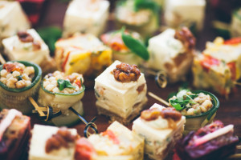

10 заповідей святкового застілля: як не переїсти?
Переїдання – як ознака нашої соціальності
Переїдаємо ми доволі нерідко. Причини бувають дуже різні, але найчастіше це – стрес, соціальний фактор та нервові чи метаболічні порушення. Святкові застілля – класичний приклад переїдання, внаслідок соціального фактору. Є чимало наукових досліджень, які вказують на те, що наша харчова поведінка дуже залежить від нашого оточення. Ми споживаємо небагато їжі у компанії незнайомців, але схильні з'їдати більш, ніж на 70% більше їжі, коли їмо в оточенні близьких людей. Особливо це виражено, коли кількість учасників застілля більше 6. Цікаво, що більше піддаються цьому впливу чоловіки.
В експериментах, де порівнювали кількість з'їденої їжі наодинці, із двома друзями, двома незнайомцями та перед екраном телевізора, було показано, що учасники, які споживали їжу із друзями або перед телевізором, переїдали найбільше – впізнаєте наше традиційне новорічне застілля? :)
Ми схильні переїдати та проводити часу за столом більше, коли знаходимося у приємній компанії. І це не що інше, як прояв нашої людської природи – соціальності.
Що відбувається, коли ми переїдаємо?
Коли ми споживаємо надмірну кількість їжі, наш шлунок надто розтягується. Це неприємно і боляче. А якщо це відбувається кілька разів підряд (святкування одне-друге та ще пару походів по всіх гостях), то маємо розтягнений шлунок, та нездатність насититися звичними для себе розмірами порцій! Адже одним із факторів виникнення відчуття ситості є саме тиск на стінки шлунку! А для розтягненого шлунку для такого ж тиску кількість їжі потрібна більша! Приємна новина – цей процес, як правило, зворотній і якщо певний час споживати менші порції їжі, то шлунок знову зменшиться.
Верхній клапан шлунку іноді не витримує надмірного навантаження і кислий вміст закидається у стравохід, відбувається його опік, що призводить до запалення та ерозій. Так розвивається гастроезофагальна рефлюксна хвороба.
Нижній клапан нашого шлунку також не витримує гпдмірного тиску їжі і пропускає її порції у напівперетравленому вигляді далі у кишківник. Це є фактором розладів травлення, зокрема, метеоризму. Адже за нормальних умов у шлунку їжа зазнає важливих змін – розщеплюється на складові, які потім можуть всмоктатися ворсинками тонкого кишківника. Також під дією шлункового соку гине більшість хвороботворних бактерій, а виживають лише кислотостійкі, зокрема, молочнокислі бактерії. А при переїданні недоперетравлена та багата небажаними бактеріями маса потрапляє в дванадцятипалу кишку та починає бродити і продукувати гази.
У дванадцятипалу кишку відкриваються жовчні протоки та протока підшлункової залози. І коли ми вклали півпорося з олів'є та пляшкою горілки, вся та вируюча маса, та ще й під додатковим тиском газів може закидатися назад у протоки підшлункової залози. А це, щонайменше – кислотний опік ніжних секреторних тканин.
А це - розвиток чи загострення панкреатиту. І, що найстрашніше – гострої його форми! При цьому розвивається гострий больовий синдром, а сам учасник застілля потребує невідкладної медичної допомоги та часто - термінового оперативного втручання! Щосвят медики відмічають підвищення кількості загострень панкреатитів у кілька разів! А гострий панкреатит практично завжди пов'язаний із вживанням алкоголю.
До слова, серцево-судинна система теж потерпає чимало, адже тісно пов'язана із диханням, а щоб нормально дихати, нам потрібна працююча діафрагма. А вона заблокована переповненим шлунком!
Слід пам'ятати, що алкоголь і кофеїн тільки погіршують ситуацію при переїданні – бо послаблюють його симптоми і дозволяють нам їсти ще. Тут ще й виникає зачароване коло, бо також надмірна кількість їжі сприяє надмірному вживанню алкоголю – ми повільніше п'яніємо, отже схильні випити більше. Але організму все одно доведеться якось знешкоджувати весь той алкоголь і легше йому від того не стає!
Популярними і рекламованими засобами при переїданні є ферментні препарати. Вони дійсно можуть дещо полегшити травлення та засвоєння спожитої їжі, але не вбережуть Ваш шлунок від розтягнення та болю, а Вашу підшлункову залозу – від панкреатиту.
Ну і, ясна річ, переїдання позначиться на Вашій фігурі та стані здоров'я у подальшому.
Які страхи! Подумаєте Ви і матимете рацію! Тому далі –перелік дієвих прийомів, як тієї біди уникнути і згадувати потім застілля з приємністю.
Як не переїсти: ефективні лайфхаки
1. Не залишайтеся голодними, очікуючи часу застілля. Якщо вирушаєте на вечірку – з'їжте щось перед нею. Бажано, щоб це "щось" було не цукерочкою чи тістечком, а містило білок та клітковину. Це вбереже ваш шлунок від болючих спазмів від одного запаху олів'є, а також вбереже від раптового та недоречного сп'яніння!
2. Памʼятайте, що алкоголь та кофеїн просто пригнічують відчуття ситості - постарайтесь на них не налягати. Пийте невеликими ковтками і в невеликих кількостях, не ведіться на якісь кимось вигадані правила допивати "до дна". Ви - володар свого організму і Ви, а не хтось, несете відповідальність за його добробут!
3. Ретельно пережовуйте їжу та спробуйте не сильно наїдатися у перші 20 хв застілля! Відчуття ситості формується приблизно за такий проміжок часу і далі Вам буде легше залишатися поміркованим.
4. Ми все одно захочемо спробувати всі страви, правда ж? А їх багато! Накладайте їжу у свою тарілку якомога меншими порціями – ліпше потім взяти добавки того, що сподобалося найбільше.
5. Не соромтесь розділити з кимось канапку, котлету чи десерт – саме ця найменша неподільна порція їжі є додатковим фактором переїсти;
6. Використайте кожну можливість, щоб порухатися! Підійдіть до вікна – подивіться на феєрверки! Візьміть участь у прибиранні зі столу, потанцюйте чи пограйте в твістер, крокодила чи, навіть, в сніжки!
7. Сплануйте свято так, щоб їжа була далеко не головним джерелом радості! Нехай це буде приємне спілкування, подарунки, ігри чи навіть Ваша нова сукня!
8. Якщо очікується гостювання у надто гостинних господарів, що готові згодувати Вам всю річну норму олів'є і розцінюють відмову як кровну образу та синонім "несмачно" (так, нажаль, таке буває!) - приготуйте заздалегідь стратегію відбивання цих атак. Дякуйте, хваліть господиню, але на "ще шмат курочки" ні в якому разі не ведіться! На крайній випадок, фраза "лікар заборонив" або "щось нудить" - Вам в поміч! ;)
9. Якщо раптом усвідомили, що вже давно ситі, але рука далі тягнеться до столу – нехай вона тягнеться... за склянкою води! Але просто чистої звичайної води! Чинно попивайте воду, якщо відчуваєте, що потрібно себе просто чимось зайняти, підтримуючи бесіду!
10. Пам'ятайте та подумки собі нагадуйте, що вранці Ваше тіло скаже Вам дякую за кожну нез'їдену ложку і невипитий келих! А, як кажуть, як Новий рік зустрінеш... :)

Photo by Kelly Jean on Unsplash